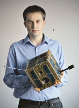

Dr Andrzej Z. Kotarba - Geoinformatyk, klimatolog Zespół Obserwacji Ziemi, Centrum Badań Kosmicznych Polskiej Akademii Nauk. Zajmuje się także
badaniami satelitarnymi, kosmicznymi, planetarnymi, badaniami Ziemi, klimatologią i obserwacjami środowiska naturalnego, astronautyką i astronomią.
Więcej
- Co Pan sądzi o umieszczeniu radioteleskopu na “ciemnej” stronie Księżyca?
- “Ciemna” strona Księżyca ma tę przewagę, że nie widać z niej Ziemi. Tak, jak my jej nie widzimy, tak ona nie widzi nas, dzięki czemu nie widzi też tego radiowego szumu, który produkujemy. Jeśli więc chcemy mieć miejsce ”ciche”, pozbawione radio-zakłóceń, to Księżyc jest jedną z najlepszych lokalizacji w pobliżu Ziemi, jaką możemy sobie wymarzyć. Minus jest taki, że na Księżyc trzeba się jakoś dostać, zbudować teleskop i go obsługiwać . To wymaga sporych nakładów. Najłatwiej (i najtaniej) byłoby zrealizować misję bezzałogową: albo taką która ląduje na Księżycu, albo taką która krąży wokół niego i przynajmniej czasami jest po niewidocznej stronie Księżyca.
- Czy słyszał Pan o kosmicznym teleskopie Webba? Co Pan o nim sądzi?
- To będzie bardzo “łebski” teleskop. Będzie ogromny, dużo większy w porównaniu z teleskopem Hubble’a, więc dostarczy nam danych o dużo lepszej jakości - w sensie rozdzielczości i czułości. Ale to co jest ważne, powód dla którego teleskop Webba jest budowany, to jest zakres promieniowania w jakim będzie obserwował. Teleskop Hubble’a obserwuje w promieniowaniu widzialnym, a Teleskop Webba przesunie się troszeczkę bardziej w kierunku fal dłuższych - podczerwieni. Te fale lepiej przechodzą na przykład przez obłoki pyłowe, które są wokół młodych gwiazd. Tym samym będzie można zobaczyć co się dzieje w tych obłokach - a powstają tam planety! Z Webbem będzie dużo łatwiej nam je obserwować, gdyż odległe globy będziemy mogli dostrzec bezpośrednio.
- Co według pana jest lepszym narzędziem badawczym, teleskopy kosmiczne czy naziemne wykorzystujące zaawansowane techniki obserwacyjne? Decyzja o budowie Hubble’a wywoływała wiele dyskusji na temat opłacalności, niektórzy sądzili, że bardziej ekonomicznie będzie postawić kilka większych naziemnych teleskopów.
- Teleskopy kosmiczne mają tę przewagę, że są w kosmosie, a więc na dzień dobry pozbywamy się wszystkich problemów jakie stwarza nam atmosfera. Kiedy budowany był teleskop Hubble’a rodziły się już techniki, które teraz są dojrzałe. Na przykład optyka adaptatywna, która pozwala nam już dzisiaj osiągać doskonałej jakości obrazy z Ziemi. A więc budowa kopii teleskopu Hubble’a nie do końca może być zasadne. Chociaż z drugiej strony, choćby nie wiem jak dobra była technika naziemna, to Teleskop Hubble’a ma mimo wszystko dużo lepsze warunki do obserwacji (próżnia) i ograniczają go tylko możliwości optyki. Pozostaje kwestia kosztów. W tym sensie, że Hubble jest tylko jeden i nie może obsłużyć wszystkich potrzeb astronomów. Kolejka chętnych do skorzystania z teleskopu jest długa, a i tak stanąć w niej mogą tylko wybrani. W takiej sytuacji część obserwacji można wykonać z Ziemi, godząc się że czasami będą one nieco gorsze jakościowo, ale mimo wszystko naukowo w pełni wartościowe. Inna sprawa to to, że są zakresy widma, które dla obserwatora na Ziemi zawsze pozostaną niedostępne. Teleskopy kosmiczne będą i powinny być budowane, tak samo jak teleskopy naziemne, które przyjmują dzisiaj ogromne rozmiary.
- W czym pomagają nam te coraz większa rozmiary luster?
- Większe lustro nam daje większą rozdzielczość kątową obserwacji - możemy bardziej szczegółowo obserwować gwiazdy i planety. To jest pierwsza i największa korzyść dużych luster. Budowany obecnie European Extremely Large Telescope dostarczy brązów 16 razy ostrzejszych niż teleskop Hubble’a. Ale duża apertura umożliwia także efektywniejsze zbieranie światła, dochodzącego z głębi kosmosu. Innymi słowy, dzięki ogromnym zwierciadłom możemy obserwować bardzo słabe obiekty (emitujące niewiele światła). Przykładowo, nigdy nie zbudowany (naziemny) Overwhelmingly Large Telescope ze 100-metrowym lustrem, byłby aż 1500 bardziej czuły niż Hubble! European Extremely Large Telescope będzie od Hubble’a czulszy około 250 razy. Myśląc o rozmiarze lustra, nie powinniśmy zapominać także o tym, co znajduje się po drugiej stronie systemu optycznego. Zwierciadła są tylko częścią optyki i istotne jest, na co ta optyka kieruje światło. Mam na myśli detektory i ich jakość. Bez odpowiedniej elektroniki nawet największy teleskop nie spełni pokładanych w nim nadziei. Koniec końców, budowa wielkich obserwatoriów wymaga też niesamowitej techniki - ogromne lustra wymuszają wnoszenie budynków, które należą do największych konstrukcji architektonicznych na świecie!
- Chciałbym zapytać o źródło informacji, które nie jest falą elektromagnetyczną - fale grawitacyjne. Na pewno słyszał Pan o tym odkryciu, co Pan o nim sądzi?
- Pamiętam entuzjazm osób, które o tym opowiadały, członków zespołów LIGO, które dokonały detekcji fal. Na ich twarzach malował się wyraz radości i spełnienia. Wykonanie obserwacji, wysiłek który trzeba było włożyć, by całość zadziałała – to coś niesamotnego. Aby dostrzec sygnał fal grawitacyjnych należało mozolnie, krok po kroku od sygnału detektorów odejmować kolejne źródła zakłóceń. Od chwili zaproponowania eksperymentu musiały minąć dekady, by sprzęt pomiarowy dojrzał, osiągnął czułość pozwalającą na pomiar wielu z tych zakłóceń z odpowiednią precyzją. Dziś wiemy, że obserwacje fal grawitacyjnych są możliwe i mamy potwierdzonych kilka detekcji. Astronomowie znajdują się teraz w momencie, gdy otwiera się przed nimi zupełnie nowy rozdział w astronomii - astronomia grawitacyjna. Od teraz będą mieli do dyspozycji nie tylko promieniowanie elektromagnetyczne, ale także coś zupełnie innego, całkowicie nowe „narzędzie”. Badając fale grawitacyjne zaczną obserwować znane procesy na nowo, a także odkrywać zjawiska o których jeszcze nie wiemy. To bardzo ekscytująca perspektywa. Powstają nowe obserwatoria, bardziej czułe, więc uda się zobaczyć dużo więcej, niż w obecnie. Obserwacje fal grawitacyjnych będą teraz intensywnie rozwijane. Trzeba jednak pamiętać, że fale elektromagnetyczne są i będą głównym źródłem informacji w astronomii obserwacyjnej. Wiele zjawisk da się obserwować tylko dzięki nim.
- Czy znane są Panu, oprócz samego zaspokojenia ciekawości, pozyskiwania informacji o kosmosie, inne zastosowania obserwacji?
- Ciekawym pomysłem jest wykorzystanie pulsarów jako źródeł referencyjnych do mierzenia czasu. Dzięki nasłuchowi szalenie regularnego pulsowania gwiazd neutronowych możliwe jest konstruowanie zegarów precyzyjniejszych, niż najlepsze z istniejących na ziemi zegarów atomowych. Możemy lepiej mierzyć czas, a ten jest dla nas bardzo ważny w całej masie różnych zastosowań, chociażby w nawigacji satelitarnej. Przez wieki obserwacje gwiazd na niebie były też fundamentem geodezji oraz nawigacji. Przed rozpoczęciem ery kosmicznej, bez astronomii nie mogłyby powstawać wiarygodne mapy, ani też nie byłoby możliwe bezpieczne żeglowanie. Współcześnie na obydwu polach dominują już techniki nawigacji satelitarnej. Obserwacje stricte-astronomiczne (astrometryczne) odgrywają za to coraz większą rolę w monitorowaniu bezpieczeństwa Ziemi. Naziemne i kosmiczne teleskopy przeczesują sferę niebieską w poszukiwaniu małych ciał (planetoid, komet), które mogłyby niebezpieczne blisko zbliżyć się do Ziemi. W analogiczny sposób monitorowana jest orbita okołoziemska – w poszukiwaniu kosmicznych śmieci, które stwarzają ryzyko uszkodzenia czynnych satelitów. Nieustannie rozwija się również heliofizyka. Astronomiczne obserwacje naszej gwiazdy pozwalają poznawać jej zachowanie, w tym kaprysy – nagłe wybuchy, z których największe są w stanie paraliżować systemy elektryczne i elektroniczne na Ziemi i okołoziemskiej orbicie. Rozwijane przez astronomię techniki obserwacyjne bardzo szybko znalazły nowe zastosowanie, gdy kosmiczne teleskopy obróciły się i spojrzały na Ziemię. Pamiętam pewną książkę z lat 70., która stwierdzała, że astronomowie i obserwatorzy Ziemi to są tak naprawdę te same osoby, różniące się jedynie kierunkiem, w który zwracają teleskop. Bo gdy spojrzymy na zagadnienie z czysto fizycznej strony, okaże się, że w obydwu przypadkach mamy do czynienia z obrazowaniem, spektroskopią, radiometrią, czy też fotometrią.
- Może chciałby Pan jeszcze coś dodać o przyszłości obserwacji?
- Przyszłość zawsze jest otwarta. W kwestii misji wielkich, kosmicznych teleskopów decydują koszty i zaawansowanie technologiczne. Takie misji planuje i przygotowuje się z wyprzedzeniem kilku dekad. W tym czasie koncepcje ewoluują i zazwyczaj są redukowane, ze względu na nieustanne cięcia budżetu. Teleskop Webba jest już w końcowej fazie realizacji, będzie wystrzelony. Co po nim? Trwają prace koncepcyjne nad satelitą Advanced Technology Large-Aperture Space Telescope (ATLAST), zbliżonym wymiarami do Hubble’a i tak jak on, celującym w obserwacje w zakresie widzialnym. Wystrzelenie, jeśli do niego dojdzie, najpewniej w drugiej połowie lat 30. Ciekawym trendem są natomiast misje małych teleskopów, bazujące na niewielkich platformach satelitarnych. Dzięki miniaturyzacji elektroniki, bardzo wartościowe misje astrometryczne i fotometryczne udaje się realizować obiektami wielkości piłki do koszykówki (np. polskie teleskopy kosmiczne BRITE), a satelita wielkości pralki (MOST, Sapphire) czy lodówki (NEOSSat, ) uznawany jest już za „duży” i zaawansowany. Takie misje są tanie i można je szybko przygotować, zrealizować. Co ciekawe, 10-15 lat temu dla wielu osób takie przedsięwzięcia wydawały się absurdalne i skazane na porażkę. Dziś są powszechnie. Nie sposób odgadnąć jakie będą. To szalenie ekscytujące!